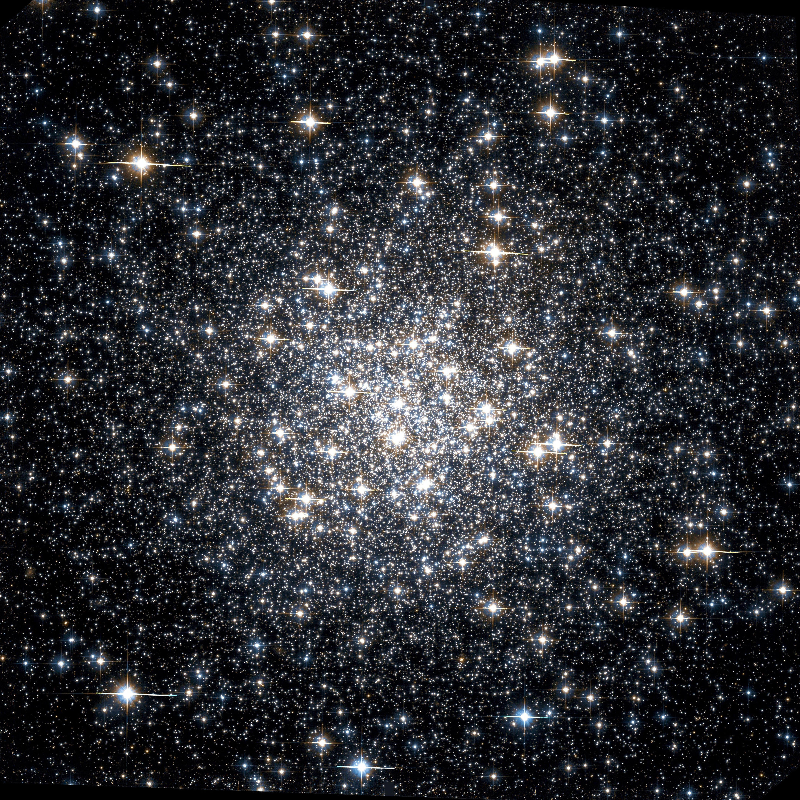

Seleccione la opción
Una nebulosa es una nube gigante de polvo y gas en el espacio. Algunas nebulosas provienen del gas y el polvo expulsado por la explosión de una estrella moribunda, como una supernova. Otras son regiones donde comienzan a formarse nuevas estrellas. Por esta razón, algunas nebulosas se llaman "Viveros de estrellas".
Tienen una importancia cosmológica notable porque se consideran los lugares donde nacen, por fenómenos de condensación y agregación de la materia, los sistemas solares similares al nuestro.
Están hechas de polvo y gases, principalmente hidrógeno y helio. El polvo y los gases en una nebulosa están muy dispersos, pero la gravedad puede comenzar a juntar grupos de polvo y gas. A medida que estos grupos se hacen más y más grandes, su fuerza gravitacional se hace más y más fuerte. Finalmente, el grupo de polvo y gas se vuelve tan grande que se colapsa por su propia gravedad. El colapso hace que el material en el centro de la nube se caliente, y este núcleo caliente es el comienzo de una estrella.
Existen en el espacio entre las estrellas, también conocido como espacio interestelar.
Pueden hacerse visibles si se encuentran en las proximidades de estrellas, o bien permanecer completamente envueltas en la oscuridad del espacio:
La nebulosa conocida más cercana a la Tierra se llama Helix. Es el remanente de una estrella moribunda, posiblemente una parecida al Sol. Está aproximadamente a 700 años luz de la Tierra. Eso significa que incluso si pudiera viajar a la velocidad de la luz, todavía le tomaría 700 años llegar allí.
Imagen: M20 (Nebulosa Trífida en Sagitario)
Una galaxia es un conjunto de gases, polvo y miles de millones de estrellas y sus sistemas solares. Se mantiene unida gracias a la fuerza de gravedad; y su luz proviene de las estrellas en su interior.
La más conocida es la vía Láctea, sin embargo existen muchas más. El Telescopio Espacial Hubble, por ejemplo, observó una pequeña porción del espacio durante 12 días, y descubrió 10 000 galaxias de todo los tamaños, formas y colores. Algunos científicos creen que podría haber unos cien mil millones de galaxias en el universo.
Según su forma, las galaxias se clasifican en elípticas, espirales, irregulares y enanas.
Las galaxias se agrupan para formar estructuras aún mayores, siendo denominadas como cúmulos galácticos. En los mismos, se observa que las de formas elípticas se suelen disponer hacia el centro, mientras que las espirales e irregulares están más cerca de los bordes.
Algunas series de objetos celestes emiten una gran cantidad de energía, y se conocen con el nombre de galaxias activas, de las cuales se encuentran:
A veces, las galaxias se acercan demasiado y chocan entre sí, siendo conocido este fenómeno como colisiones. En este caso, la galaxia absorbe a la más pequeña gracias a su fuerza gravitatoria. Se dice que la Vía Láctea chocará con Andrómeda. Sin embargo, el suceso ocurrirá dentro de cinco mil millones de años. Además, las galaxias son tan grandes y están tan expandidas en los extremos que, aunque se choquen entre sí, los planetas y los sistemas solares a menudo no llegan a colisionar.
Imagen: M74 (Galaxia espiral en Piscis)
Son grupos de estrellas que están asociadas por la atracción gravitatoria entre ellas, y que comparten un mismo origen.
Se encuentran diseminados por la Vía Láctea y otras galaxias.
Se pueden distinguir dos tipos de cúmulos estelares: los abiertos y los globulares.
Contienen estrellas jóvenes, que se hallan relativamente dispersas en una región que tiene, como media, 10 años luz de diámetro. Como ejemplo está Pléyades.
También existen cúmulos de galaxias, y cúmulos de cúmulos de galaxias (supercúmulos).
Los cúmulos de galaxias son superestructuras cósmicas. Pueden alcanzar tamaños del orden de millones años luz de diámetro, y el numero de galaxias que los forman es muy variable. La Vía Láctea se encuentra en el llamado Grupo Local, que consta de la primera, Andrómeda y M33, más 30 galaxias más pequeñas.
Los supercúmulos se conforman por agrupaciones de decenas o centenas de galaxias. El Grupo Local forma parte del supercúmulo de Virgo, con una centena de cúmulos galácticos y con forma de plato, con un diámetro de 200millones de años luz.
Imagen: M56 (Cúmulo globular en Lira)